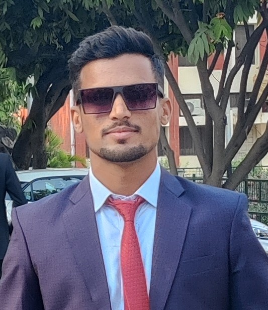

Dinesh Kumar
Software Developer
Passionate coder,enthusiastic learner loves to use analytical skills for
problem solving. IIT Roorkee graduate, batch of 2023 in Mechanical
Engineering, looking forward to working in the corporate world. Really
interested in Software Engineering and developing technological solutions
for the advancement of the society.
Education :
- Mechanical Engineering, IIT Roorkee, 2019-2023
- Intermediate (Class 12th), RBSE Board, 2017-2018
Work Experience :
Intern, Tides IIT Roorkee, May-July 2022
Worked with the Tides team to cater to the needs of the various startups
running on the campus. I assisted the startup teams in getting their
funding approved, getting workplaces, and handled various other cumbersome
processes involved.
Personal Projects :
-
Fraud Prediction to improve Supply Chain Transactions, 2022
Investigated the fraud transactions going on in the supply chain
process by fraudstures or hackers and created a model using ML and
WebD to mitigate trickery.
-
Music Recommendation system, 2021
- Aimed to recommend music based on user's preferences.
-
Performed a case study by conducting a survey about user's
preferences in music.
- KNN machine algorithm was used to accomplish the objective.
Skills :
C++ Python DSA MySQL DBMS
HTML CSS Javascript OOPS Competitive Programming
Other Accomplishments :
-
Secretary, Hockey (2021-2023)
Served as the secretary of the Institute's Hockey team and lead the team to winning various tournaments.
-
Inter-IIT Gold Medalist
Won Gold Medal (Hockey) for IIT Rookee in Inter-IIT Sports Meet'2022.
-
Among top 500 in Codeforces coding contest
Global rank 433 in Codeforces Round 805 (Div-2)